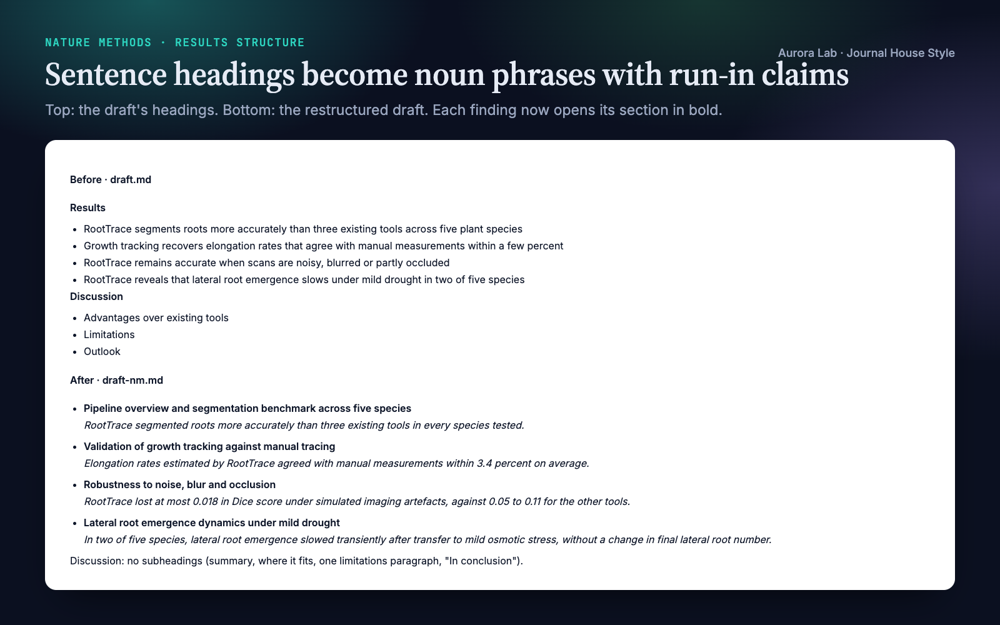
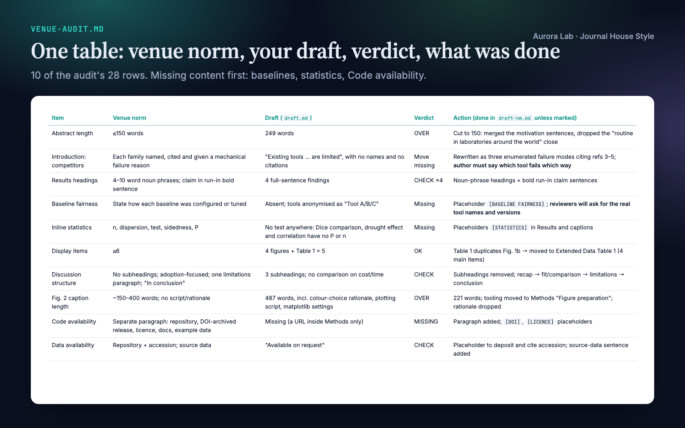
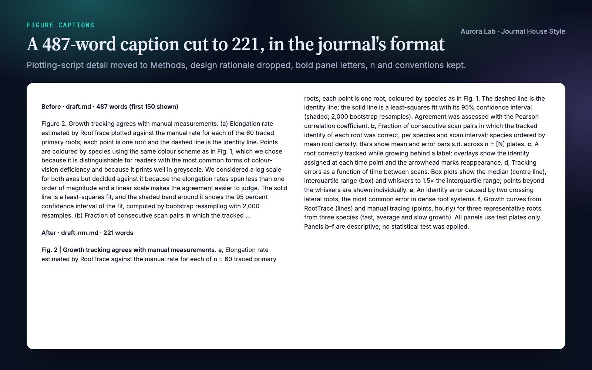
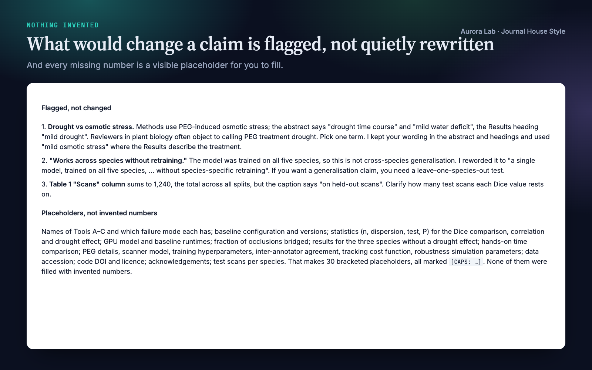
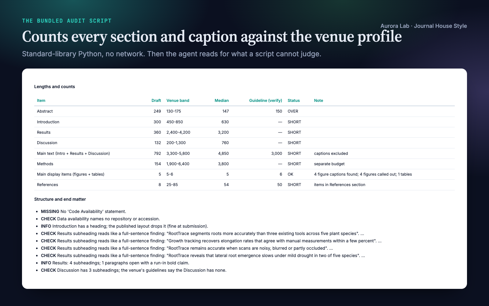
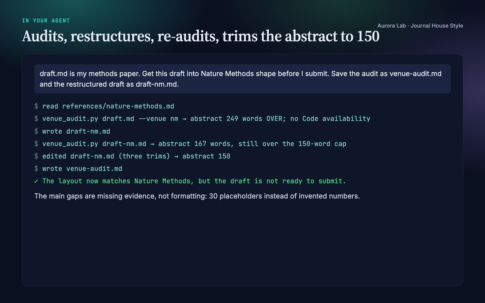

Overview
Editors see the shape of a paper before they read a sentence. A 250-word abstract, findings written as section headings, a Discussion split into "Advantages", "Limitations" and "Outlook", a 500-word caption that explains the plotting script, a bare repository link where a Code availability statement should be: each one tells the editor the paper was written for somewhere else. Journal House Style makes your agent fix the shape:
- Two venues, profiled. This version covers exactly Nature Methods and Nature Machine Intelligence (NMI), Article format. Each profile gives section lengths, the moves its abstracts and introductions make, how Results are structured, the shape of its Discussion, caption conventions, Methods and end matter. Other journals are not covered.
- An audit you can act on. One table (venue norm, your draft, verdict, action) and a prioritised list: missing required content first, then structure, then cuts, then captions.
- Restructure before cutting. Sentence headings become noun phrases with the finding as a bold run-in sentence, one subsection per main figure, no Discussion subheadings, detail moved from captions to Methods and secondary material to Extended Data.
- End matter that passes the checks. Code availability as a paragraph with an archived, DOI-bearing release and a licence; Data availability with accessions; the Reporting summary pointer.
- Nothing invented. A missing runtime, n, test or accession becomes a visible placeholder. Anything that would change what a claim says is flagged for you instead of rewritten.
Other Aurora Lab skills for the same draft: Scientific Voice (sentence-level prose), Claim Check (does each sentence stay inside its evidence?) and Test Readers (how a cold reader takes it) pair well with it. Each works on its own.
Quick start
- Get the skill from Agensi and add it to your agent (Claude Code, Codex CLI, Cursor, Gemini CLI or any agent that loads SKILL.md skills).
- Optional: Python 3.10+ for the audit script. It uses the standard library only; the audit and restructuring themselves need nothing installed.
- Name the venue, or let the agent choose. For a paper that could go to either, it recommends one and says what would change for the other.
Example requests:
- "Get this draft into Nature Methods shape before I submit."
- "Audit paper.md against Nature Methods and tell me what to cut."
- "Is this NMI-shaped? Restructure the Results the way that journal does it."
- "My abstract is 240 words; fit it to Nature Machine Intelligence."
- "Check submission readiness for Nature Methods: lengths, captions, code availability."
Where the numbers come from
Two kinds of number, kept apart in every report:
| Source | How to read it | |
|---|---|---|
| Guideline limits | Each journal's author guidelines (Article content type and formatting guide), checked 19 October 2026 | What the journal asks for at submission |
| Length bands | Five published research Articles per journal: Nature Methods 2023 to 2026, NMI 2025 to 2026, counted by automated text extraction | What the journal actually printed; approximate, roughly 10 to 15 percent |
The guideline limits as checked:
| Article | Nature Methods | Nature Machine Intelligence |
|---|---|---|
| Abstract | up to 150 words, no references | up to 150 words, no references |
| Main text (excludes abstract, Methods, references, figure legends) | 3,000 words; up to 5,000 at editorial discretion | up to 3,500 words |
| Display items (figures and tables) | up to 6 | up to 6 |
| Extended Data figures | at most 10 | at most 10 |
| References | about 50 recommended | about 50 recommended |
| Discussion | no subheadings | no subheadings |
| Code availability | a separate statement when custom code is central, with a DOI-minting archive as the stated best practice | the same |
Five papers is a small sample, so the bands describe what was accepted, not what is allowed. Journals change their limits: the agent ends every audit by asking you to check the current guidelines, which win if they differ. The exemplar papers are listed in the profiles by title and DOI; no text from them is reproduced.
What you get
Everything below comes from a real run: a fresh agent session with only this skill installed, given the request in the session card. The input was ours: a synthetic, seeded draft.md of about 2,100 words describing a made-up tool, "RootTrace", for segmenting and tracking plant roots in time-lapse scans. We planted a 249-word abstract, no Code availability statement (only a bare URL inside Methods), four Results headings written as full-sentence findings, a Discussion with three subheadings, and a 487-word Fig. 2 caption full of colour-choice rationale and plotting-script settings, with every caption in "Figure N. (a)" style. The agent cut the abstract to 150 words, turned the headings into noun phrases with bold run-in claims, removed the Discussion subheadings, moved a table that repeated a figure to Extended Data, cut the Fig. 2 caption to 221 words in the journal's format, and added Code availability, Reporting summary and Acknowledgements. It invented no numbers: 30 bracketed placeholders mark what the author must supply. It also flagged three problems we had not planted, including an osmotic-stress experiment described as drought. The run took 165 s and cost $0.69.






How it works
- Identify the venue. From your request, or from the paper: a method others will run points to Nature Methods; a learning or inference contribution points to NMI. The agent then reads only that venue's profile.
- Audit. The script counts words per section and caption and checks structure and end matter; the agent then reads the draft for what a script cannot judge (whether each abstract move is really there, whether competitors are named with a mechanical reason they fall short, whether baselines were given their best configuration) and writes one table plus a prioritised action list.
- Restructure. Section order, noun-phrase Results headings with run-in claims, one subsection per main figure in the order the venue's reviewers need the evidence, required content added (validation sentence, runtime, baseline fairness, Code availability), material moved rather than deleted.
- Cut to budget. Repetition first, then framing paragraphs, catalogues of parameters (to Methods), secondary results (to Extended Data), caption content that belongs in Methods; sentence compression comes last. A claim's evidence, its comparator and required end matter are never cut.
- Check. Re-run the audit, re-read the abstract and the first paragraph of each Results section alone, confirm every figure and panel is called out, list the placeholders, and remind you to check the current guidelines and complete the Reporting Summary and source data.
Terminology, citation style and your spelling convention stay as you wrote them: both journals copyedit spelling, so consistency is what matters.
Files it reads and writes
| Path | |
|---|---|
| Reads | the manuscript you name (Markdown or LaTeX, one file or a folder of section files); with a research/ folder, research/paper/*, research/figures/*.md (caption drafts), research/refs.bib (reference count) and research/claims.md (so cuts never drop a claim's evidence) |
| Writes | the audit report (research/paper/venue-audit.md, or where you say) and a restructured draft where you ask for one |
| Never | changes your numbers or findings, adds results, or edits files in place unless you ask |
The audit script
python journal-house-style/scripts/venue_audit.py draft.md --venue nm
python journal-house-style/scripts/venue_audit.py research/paper/ --venue nmi \
--bib research/refs.bib --target-words 3500 --out research/paper/venue-audit.md
python journal-house-style/scripts/venue_audit.py paper.tex --venue nm --json
Reads Markdown (sections from headings) or LaTeX (\section, \subsection and the abstract environment), a single file or a folder of section files read in name order. Figure captions are paragraphs that start with "Fig. N", "Figure N" or "Extended Data Fig. N"; they are counted separately and left out of section counts, as in the measurements. No network; it writes only the report you name with --out.
| Reports | Detail |
|---|---|
| Lengths | abstract, introduction, Results, Discussion, main text, Methods: OVER, SHORT, CHECK (inside the printed range but above the guideline) or MISSING |
| Counts | main display items (figures plus tables), Extended Data figures, references (from the list or a .bib) |
| Captions | words per main-figure caption; "Fig. N |" title, bold panel letters instead of (a), an n, defined error bars, script or software detail that belongs in Methods |
| Structure | section order, missing Code or Data availability, availability statements with no identifier or repository, sentence-style Results headings, Discussion subheadings, figures called out without a caption |
| Moves | keyword checks for the venue's expected abstract, introduction, Results and Discussion moves: "found" means a candidate exists, not that it is done well |
| Placeholders | bracketed placeholders such as [RUNTIME: to be measured] are counted and ignored by the move and end-matter checks |
| Budget | --target-words N splits a main-text target across sections in the venue's median proportions |
--strict exits 1 when anything is OVER or MISSING, for use before a submission checklist.
FAQ
Which journals does it cover?
Exactly two in this version: Nature Methods and Nature Machine Intelligence, Article format. Other journals, other article types and conference formats are not profiled.
Are the word limits up to date?
They were checked against both journals' author guidelines on 19 October 2026 (table above). Journals change them, so every audit ends by asking you to check the current guidelines, which win if they differ.
Where do the length bands come from?
From five published research Articles per journal, counted by automated text extraction. They show what each venue actually printed, such as how long its Discussions run, and are approximate.
Will it invent numbers or change my findings?
No. Missing values become visible placeholders listed in the audit, and anything that would change what a claim says is flagged instead of rewritten. In the demo it flagged an osmotic-stress experiment described as drought and a cross-species claim the training set could not support.
My draft is short, not long. Is it still useful?
Yes. The demo draft was a quarter of the Nature Methods guideline; the audit said so and listed the evidence reviewers would ask for (named and fairly configured baselines, statistics, runtimes) instead of padding the text.
Does it work with LaTeX?
Yes. The audit script reads LaTeX source as well as Markdown, and the agent restructures in the format you wrote in.
How is it different from Scientific Voice?
Scientific Voice edits sentences. Journal House Style works at the level of the venue: section lengths, order, headings, captions and end matter. They pair well, and neither needs the other.
Limitations
- Two journals only, Article format. Brief Communications, Analyses, Perspectives, other journals and conference formats are not profiled.
- The length bands come from five papers per journal counted by automated extraction: approximate, and a description of what was printed, not of what is allowed.
- The guideline limits were checked on 19 October 2026 and can change; the current author guidelines win.
- Move detection in the audit script is keyword-based. The agent's read-through decides whether a move is really there.
- It works at the venue level. Sentence-level voice and whether each claim matches its data are outside its scope.
- It never adds results or numbers, and it does not fill in the journal's Reporting Summary or prepare source data.
Changelog
1.0.0 · October 2026 · First release: Nature Methods and Nature Machine Intelligence; guideline limits checked 19 October 2026.